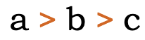

This page brings together basic information about the Syriac script and its use for the Turoyo (Surayt) language. It aims to provide a brief, descriptive summary of the modern, printed orthography and typographic features, and to advise how to write Turoyo using Unicode.
The orthography presented here conforms to the approach described by the Erasmus+ Aramaic-Online Project (2014-2017).
The Turoyo language is spoken by around 70,000 people in its homelands, but by around 250,000 people including the worldwide diaspora. Until recently there was little standardisation of the written text, but the Erasmus+ Aramaic-Online Project (2014-2017) defined a standard way of writing the language, in both Syriac and Latin scripts, and we use the former for the information in this page.
Turoyo, also referred to as Surayt, is a Central Neo-Aramaic language traditionally spoken in southeastern Turkey and northern Syria by Assyrians. Most speakers use the Classical Syriac language for literature and worship. Turoyo speakers are currently mostly members of the Syriac Orthodox Church, but there are also Turoyo-speaking members of the Chaldean Catholic Church, especially from the town of Midyat, and of the Assyrian Church of the East. It is also currently spoken in the Syriac Diaspora, although classified as a vulnerable language. Turoyo is not mutually intelligible with Western Neo-Aramaic having been separated for over a thousand years, while mutual intelligibility with Assyrian Neo-Aramaic and Chaldean Neo-Aramaic is limited.
Apart from Classical Syriac Aramaic, the alphabet has been used to write other dialects and languages. Several Christian Neo-Aramaic languages from Turoyo to the Northeastern Neo-Aramaic dialects of Assyrian and Chaldean, once vernaculars, primarily began to be written in the 19th century. The Serṭā variant specifically has recently been adapted to write Western Neo-Aramaic, traditionally written in a square Aramaic script closely related to the Hebrew alphabet. Besides Aramaic, when Arabic began to be the dominant spoken language in the Fertile Crescent after the Islamic conquest, texts were often written in Arabic using the Syriac script as knowledge of the Arabic alphabet was not yet widespread; such writings are usually called Karshuni or Garshuni (ܓܪܫܘܢܝ). In addition to Semitic languages, Sogdian was also written with Syriac script, as well as Malayalam, which form was called Suriyani Malayalam.
The orthography described here is as described by the ܫܠܳܡܐ ܣܘܪܰܝܬ Šlomo Surayt project. The site introduction includes the following.
Surayt is a Neo-Aramaic language originally spoken in Turabdin, a region in southeastern Turkey, traditionally inhabited by Syriac Christians. In academia, Surayt has also become known as “Turoyo”. However, the speakers themselves have not accepted this academic term. They usually call their language Surayt. This term goes back to Classical Syriac Suryå'īṯ and means “Syriac” or “the way Syrians speak”. Today in Europe, many speakers simply use the term Suryoyo for their language. In this course, we have chosen to use the term Surayt because its speakers in Turabdin traditionally used it. It can also be used alongside the term Turoyo, which has been more in use among Western scholars.
Surayt spoken in the diaspora is not the same as any of the local dialects in Turabdin. The language presented in Šlomo Surayt is a slightly unified version of Surayt, which developed in the diaspora, and which can be considered as unique for its new context. Today, only about 1,500 people in the area of origin in Turabdin speak Surayt. However, in the European diaspora more than 250,000 people call it their “mother tongue”. Surayt is not a dialect of Classical-Syriac (kṯobonoyo), which is still used as liturgical language in Syriac churches. Within the Neo-Aramaic languages, Surayt is classified as Eastern Neo-Aramaic, which also includes the Jewish and other Christian Neo-Aramaic dialects of Iraq and Iran.
The Classical Syriac orthography, is an abjad. The script relies mostly on consonant sounds to write words. However, the orthography described here for Turoyo requires the text to be fully pointed, making it an alphabet. See the table to the right for a brief overview of features for the modern Turoyo orthography.
The Syriac script has three main orthographic systems: maḏnḥāyā (ܡܲܕ݂ܢܚܵܝܵܐ) (eastern), ʾesṭrangēlā (ܐܣܛܪܢܓܠܐ), and serṭā (ܣܶܪܛܳܐ) (western). Turoyo uses a version of the serto orthography, derived from West Syriac texts.
Text runs right to left in horizontally stacked lines. Most letters join with letters on either side, but 7 join only to the right.
All the letters in the Syriac block are consonants. There are 22 basic consonant letters, but these can be combined with one of 2 diacritics (maybe 4) to create 8 additional sounds. Six letters can represent either plosives (hard sounds) or fricative sounds (soft), but diacritics usually indicate which is which.
Geminated consonants are written using doubled letters. There is no equivalent of the Arabic sukun.
Turoyo only uses a small number of diacritics out of the large set contained in the Syriac Unicode block.
Turoyo written in the 2017 orthography is fully pointed, making it an alphabet rather than an abjad. For vowels, Turoyo uses a set of diacritics based on Greek letters. The position of diacritics relative to the base consonant (above or below) is not interchangeable, but signals different vowel sounds. There are 3 matres lectionis, and 5 vowel diacritics. Unlike Assyrian Neo-Aramaic, the sounds i and u are written using a mater lectionis with no diacritics.
Turoyo uses Greek symbols to represent the other vowels. Unlike West Syriac, the position of the diacritic above or below the base consonant is fixed, and fewer diacritics are used.ss,28
ܶ␣ܳ␣ܷ␣ܱ␣ܰ
This table provides a simplified summary of how basic vowel sounds look, using ܒ as a base.
bi
ܒܝ
bu
ܒܘ
be
ܒܶ
bə
ܒܷ
bo
ܒܐ | ܒܳ
bă
ܒܱ
bɑ
ܒܰ
Simplified table of vowel sounds with BEH as the base.
Consonants representing vowels (matres lectionis)
Three consonants represent vowels or the end of a diphthong if they have no vowel diacritic attached.
ܐ␣ܝ␣ܘ
No diacritic is used to express the sounds i or u.
ܝ [U+071D SYRIAC LETTER YUDH]
and
ܘ [U+0718 SYRIAC LETTER WAW]
represent these respective vowel sounds if they have no vowel diacritic and the preceding consonant also has no vowel diacritic. If the preceding consonant does have a vowel diacritic, they represent the -j and -w of a diphthong.ss,28
ܢܝܣܷܢ
ܐܰܝܕܰܪܒܐ
ܓܘܫܡܳܐ
ܝܰܘܡܳܐ
ܐ [U+0710 SYRIAC LETTER ALAPH]
behaves in a similar way to produce o at the end of a word after a vowelless consonant.ss,31
All word-initial vowels are preceded by or combined with olaf.
ܐܷܫܘܷܛܐܝܠܷܢ
It is also silent at the end of a word after a vowel diacritic, especially for words that end in a or ess,31.
ܒܳܬܶܐܒܝܪܰܐ
Standalone vowels
At the beginning of a word, all vowels are attached to or follow a silent ܐ [U+0710 SYRIAC LETTER ALAPH].
i
ܐܝ
u
ܐܘ
e
ܐܶ
ə
ܐܷ
o
ܐܳ
ă
ܐܱ
ɑ
ܐܰ
Simplified table of word-initial vowel sounds with ALAPH as the base.
Vowel length
tbd
Nasalisation
tbd
Tones
Turoyo is not a tonal language.
Vowel sounds to characters
This section maps Turoyo vowel sounds to common graphemes in the Serto 1917 orthography. Click on a grapheme to find other mentions on this page (links appear at the bottom of the page). Click on the character name to see examples and for detailed descriptions of the character(s) shown.
All vowels in word initial position precede the characters described below with ܐ [U+0710 SYRIAC LETTER ALAPH].
All the letters in the Syriac block are consonants. There are 22 basic consonants, but these can be combined with one of two diacritics to create additional sounds. The combinations are treated as letters of the alphabet, and can be seen in the previous section, consonantSummary.
ܔ [U+0714 SYRIAC LETTER GAMAL GARSHUNI]
is used as a standard letter of the alphabet in Turoyo, whereas in other uses of the Syriac script it is only used for writing Arabic (Garshuni).
ܗ [U+0717 SYRIAC LETTER HE]
is silent when used as a grammatical indicator at the end of a word after e or a when it represents a personal ending or pronominal suffix.ss,32
ܓܪܷܫܠܶܗ
ܓܪܷܫܠܰܗ
ܒܰܒܶܗ
ܒܰܒܰܗ
Unusually for the Syriac script, the default pronunciation of
ܦ [U+0726 SYRIAC LETTER PE]
is the fricative f. To indicate p, which is mostly used for loan words, add
◌݁ [U+0741 SYRIAC QUSHSHAYA].ss,12
See the section that follows for more information.
Six Syriac consonant symbols represent two sounds, one 'hard' and one 'soft'. The hard sound is an unaspirated plosive, the soft sound is an aspirated fricative. The intended sound of the letter can be made explicit using diacritics.
Hard form. The 2017 orthography uses unmarked letters for the hard form of these consonants, with one exception:
◌݁[U+0741 SYRIAC QUSHSHAYA] is used to indicate p.
When it is used with
ܕ [U+0715 SYRIAC LETTER DALATH],
which already has a dot below, the two dots appear side by side, ie.
ܕ݂d‐̣
Repertoire extension
̰␣݅␣݆
In addition to the hard and soft diacritics mentioned above,
◌̰[U+0330 COMBINING TILDE BELOW]
is used to represent sounds that are not present in Classical Syriac, and is typically found in loan words.
The 1917 orthography lists only 2 uses, both of which appear below the base consonantss,13:
Whereas Assyrian Neo-Aramaic also uses this diacritic for the sound d͡ʒ, Turoyo has a dedicated letter for that sound
(ܔ [U+0714 SYRIAC LETTER GAMAL GARSHUNI]).ss,13
According to the code point annotations in the Unicode Standard,
݅ [U+0745 SYRIAC THREE DOTS ABOVE]
and
݆ [U+0746 SYRIAC THREE DOTS BELOW]
are also used, specifically in Turoyo, for letters not found in Syriac. However, these are not mentioned in the sources describing the 2017 orthography standardisation.
ܐ݅ ܦܪܥܓܬܐܔ݆ܰܥܓܰܗ̈
Isolated forms
Isolated versions of 3 letters, such as may be found in counter styles, are usually presented as a doubled letter, using intial and final forms, ie.
ܟܟkܡܡmܢܢn
Onsets
tbd
Finals
tbd
Consonant clusters
There is no equivalent to the Arabic sukun to indicate clusters of consonant sounds. Consonant letters are simply juxtaposed with no intervening vowel diacritics.so,18
ܩܡܶܣܬܳܐ
Geminated consonants are written by doubling the letter. A shadda is not used.so,18
ܛܷܒܒܰܟ݂
ܗܷܢܢܶܐ
Consonant length
Geminated consonants are written using doubled letters. There is no equivalent of the Arabic sukun.
Vowel absence
tbd
Consonant sounds to characters
This section maps Turoyo consonant sounds to common graphemes in the Serto 1917 orthography. Click on a grapheme to find other mentions on this page (links appear at the bottom of the page). Click on the character name to see examples and for detailed descriptions of the character(s) shown.
Sounds listed as 'infrequent' are allophones, or sounds used for foreign words, etc.
Syriac script is written horizontally, right-to-left. Like other RTL scripts, such as Arabic and Hebrew, modern numbers and text in LTR scripts are displayed left-to-right (producing 'bidirectional' text).
Bidirectional Syriac text. Numbers and Latin text (highlighted) are read left-to-right, and the rest of the text flows right-to-left.
The Unicode Bidirectional Algorithm automatically takes care of the ordering for all the text in fig_bidi_text, as long as the 'base direction' is set to RTL. In HTML this can be set using the dir attribute, or in plain text using formatting controls.
If the base direction is not set appropriately, the directional runs will be ordered incorrectly as shown in fig_bidi_no_base_direction, making it difficult to get the meaning (especially if there are more than 3 directional runs in a sentence).
The exact same sequence of characters with the base direction set to RTL (top), and with no base direction set on this LTR page (bottom).
Unicode provides a set of 10 formatting characters that can be used to control the direction of text when displayed. These characters have no visual form in the rendered text, however text editing applications may have a way to show their location.
In Unicode 6.1, the Unicode Standard added a set of characters which do the same thing but also isolate the content from surrounding characters, in order to avoid spillover effects. They are [U+2067 RIGHT-TO-LEFT ISOLATE] (RLI), [U+2066 LEFT-TO-RIGHT ISOLATE] (LRI), and [U+2069 POP DIRECTIONAL ISOLATE] (PDI). The Unicode Standard recommends that these be used instead.
There is also [U+2068 FIRST STRONG ISOLATE] (FSI), used initially to set the base direction according to the first recognised strongly-directional character.
[U+200F RIGHT-TO-LEFT MARK] (RLM) and [U+200E LEFT-TO-RIGHT MARK] (LRM) are invisible characters with strong directional properties that are also sometimes used to produce the correct ordering of text.
A sequence of European numbers, for example a range separated by hyphens, runs from right to left in the Syriac script (and Arabic or Thaana scripts), whereas for Persian, Hebrew, N’Ko or Adlam scripts it runs left to right.
fig_range shows some Syriac text, which is right-to-left overall, containing a numeric range that is ordered RTL, ie. it starts with 240 and ends with 250.
A numeric range in Syriac language text.
The Unicode Bidirectional Algorithm automatically produces the expected ordering when a sequence or expression follows Syriac characters. However, a sequence that appears alone on a line doesn't benefit from this, so to make the text appear correctly for Syriac you should add [U+061C ARABIC LETTER MARK] (ALM) at the start of the line (see fig_alm). This is an invisible formatting character.
A numeric date alone on a line of RTL text, with ALM before it (top), and without (bottom). (Click on each line to see the code points.)
Similar special ordering is applied to numbers in equations, such as 1 + 2 = 3, for Syriac language text.
For additional details on how direction of ranges interacts with surrounding characters and separators used, see the section Expressions & sequences in the Modern Standard Arabic orthography description.
Glyph shaping & positioning
The following features are not found in this orthography.
Case distinction, or special transforms to convert between characters.
This section brings together information about the following topics:
font/writing styles;
cursive text;
context-based shaping;
context-based positioning;
letterform slopes, weights, & italics;
case & other character transforms.
Syriac is cursive, ie. letters in a word are joined up. Fonts need to produce the appropriate joining form for a code point, according to its visual context, but the code point used for a given letter doesn't change.
ܦܘܠܝܛܝܩܝܬܐ
Letters join on the right or both sides in Syriac script.
Eight letters join only to the right.
ܐ␣ܬ␣ܕ␣ܨ␣ܙ␣ܗ␣ܪ␣ܘ
All other consonants join on both sides.
Cursive joining forms
The cursive treatment produces only minor changes to glyph shapes in most cases. A few letters, however, exhibit noteworthy changes, especially in word final positions. fig_joining_forms and fig_right_joining_forms show all the basic shapes in Assyrian and what their joining forms look like. Significant variations are highlighted.
isolated
right-joined
dual-join
left-joined
Turoyo letters
ܒ
ـܒ
ـܒـ
ܒـ
ܒ␣ܒ݂
ܦ
ـܦ
ـܦـ
ܦـ
ܦ␣ܦ݁
ܣ
ـܣ
ـܣـ
ܣـ
ܣ
ܩ
ـܩ
ـܩـ
ܩـ
ܩ
ܫ
ـܫ
ـܫـ
ܫـ
ܫ␣ܫ̰
ܛ
ـܛ
ـܛـ
ܛـ
ܛ
ܡ
ـܡ
ـܡـ
ܡـ
ܡ
ܟ
ـܟ
ـܟـ
ܟـ
ܟ␣ܟ݂
ܚ
ـܚ
ـܚـ
ܚـ
ܚ
ܝ
ـܝ
ـܝـ
ܝـ
ܝ
ܓ
ـܓ
ـܓـ
ܓـ
ܓ␣ܔ␣ܓ݂
ܠ
ـܠ
ـܠـ
ܠـ
ܠ
ܥ
ـܥ
ـܥـ
ܥـ
ܥ
ܢ
ـܢ
ـܢـ
ܢـ
ܢ
Joining forms for shapes that join on both sides.
isolated
right-joined
XXX letters
ܐ
ـܐ
ܐ
ܬ
ـܬ
ܬ␣ܬ݂
ܙ
ـܙ
ܙ␣ܙ̰
ܨ
ـܨ
ܨ
ܘ
ـܘ
ܘ
ܗ
ـܗ
ܗ
ܕ
ـܕ
ܕ␣ܕ݂␣ܪ
Joining forms for shapes that join on the right only.
Alaph cursive forms
A feature of Eastern and Western Syriac styles is that an unjoined alaph within a word has a different shape according to whether it is word-final or not. For example, fig_alaph_joining shows a sequence where the 2 alaph characters at the end have different shapes, although both are unconnected.
A word showing different shapes for alaph.
Managing glyph shaping
[U+200D ZERO WIDTH JOINER] (ZWJ) and [U+200C ZERO WIDTH NON-JOINER] (ZWNJ) are used to control the joining behaviour of cursive glyphs. They are particularly useful in educational contexts, but also have real world applications.
ZWJ permits a letter to form a cursive connection without a visible neighbour.
ZWNJ prevents two adjacent letters forming a cursive connection with each other when rendered.
Context-based shaping & positioning
Cursive shaping
See just above for shaping related to cursive joining.
Ligatures
Apart from the shaping required to support cursive behaviour, there are also typical ligatures, such as those shown in fig_serto_lig, some of which are optional or font-dependent.n,19-20
There are sometimes clashes between diacritic marks which have to be resolved by repositioning one of the diacritics, or sometimes producing a different solution.
For example, marks are usually centred vertically over or under a base character. If, however, ݂[U+0742 SYRIAC RUKKAKHA] appears below ܕ[U+0715 SYRIAC LETTER DALATH] when the glyph for that has a dot below, the mark is moved slightly to the right, as shown here.
Rukkakha moves to the right to accommodate the dot under dalath.
Letterform slopes, weights, & italics
TBD
Graphemes
Grapheme clusters
TBD
Punctuation & inline features
Word boundaries
Turoyo uses spaces between words.
There are no one-letter words. One letter conjunctions and prepositions such as ܘw are continguous with the word they precede.
Phrase & section boundaries
،␣؛␣܆␣܇␣.␣؟
Turoyo uses ASCII punctuation and punctuation borrowed from Arabic. It also uses Syriac punctuation. For separators at the sentence level and below, the following non-ASCII punctuation is used.
Observation:Šlomo Surayt makes heavy use of the following 2 Syriac punctuation marks as separators: ܇ [U+0707 SYRIAC COLON SKEWED RIGHT], used where the equivalent English text uses en-dash and semicolon; ܆ [U+0706 SYRIAC COLON SKEWED LEFT], used where the English has en-dash or solidus. The Surayt Orthography description, however, seems to equate them with comma and semicolon, respectively.so,18
Bracketed text
(␣)
Turoyo commonly uses ASCII parentheses to insert parenthetical information into text.
The words 'left' and 'right' in the Unicode names for parentheses, brackets, and other paired characters should be ignored. LEFT should be read as if it said START, and RIGHT as END. The direction in which the glyphs point will be automatically determined according to the base direction of the text.
 b > c" data-notes="Noto Sans Syriac Western 48px">
ܒ > ܓ" data-notes="Noto Sans Syriac Western 48px">
Both of these lines use > [U+003E GREATER-THAN SIGN], but the direction it faces depends on the base direction at the point of display.
The number of characters that are mirrored in this way is around 550, most of which are mathematical symbols. Some are single characters, rather than pairs. The following are some of the more common ones.
(␣)␣<␣>␣[␣]␣{␣}␣«␣»␣‹␣›
Quotations & citations
What characters are used to indicate quotations? Do quotations within quotations use different characters? What characters are used to indicate dialogue?
Emphasis
How are emphasis and highlighting achieved? If lines are drawn alongside, over or through the text, do they need to be a special distance from the text itself? Is it important to skip characters when underlining, etc? How do things change for vertically set text?
Abbreviation, ellipsis & repetition
What characters are used to indicate abbreviation, ellipsis & repetition?
Inline notes & annotations
tbd
Other punctuation
tbd
Other inline text decoration
tbd
Line & paragraph layout
Line breaking & hyphenation
Basic line-break opportunities occur between the space-separated words.
They are not broken at the small gaps that appear where a character doesn't join on the left.
When a line break occurs in the middle of an embedded left-to-right sequence, the items in that sequence are rearranged visually so that the reading direction remains top-to-bottom. latin-line-breaks shows how two Latin words are apparently reordered in the flow of text to accommodate this rule.
Syriac (estrangelo) with embedded Latin text. The lower of these two images shows the result of decreasing the line width, so that text wraps between a sequence of Latin words.
In digital text the rearrangement is automatic. Only the positions of the font glyphs are changed: nothing affects the order of the characters in memory.
Text alignment & justification
TBD
Text spacing
tbd
This section looks at ways in which spacing is applied between characters over and above that which is introduced during justification.
Baselines, line height, etc.
tbd
Turoyo uses the so-called 'alphabetic' baseline, which is the same as for Latin and many other scripts.
To include the long ascenders and descenders in Syriac, plus the (sometimes stacked) diacritics, line heights need to be slightly larger than for English text.
Counters, lists, etc.
TBD
Styling initials
TBD
Page & book layout
This section is for any features that are specific to Turoyo and that relate to the following topics:
general page layout & progression;
grids & tables;
notes, footnotes, etc;
forms & user interaction;
page numbering, running headers, etc.
General page layout & progression
Syriac books, magazines, etc., are bound on the right-hand side, and pages progress from right to left.
Binding configuration for Turoyo books, magazines, etc.
Columns are vertical but run right-to-left across the page.
Tables, grids, and other 2-dimensional arrangements progress from right to left across a page.
Headings
Table headings are often distinguished from the main text by using a different writing style, in addition to size differences (see fontstyle).


 [
[ [
[ [
[ [
[ [
[ [
[ [
[ [
[ [
[ [
[
 [
[ [
[